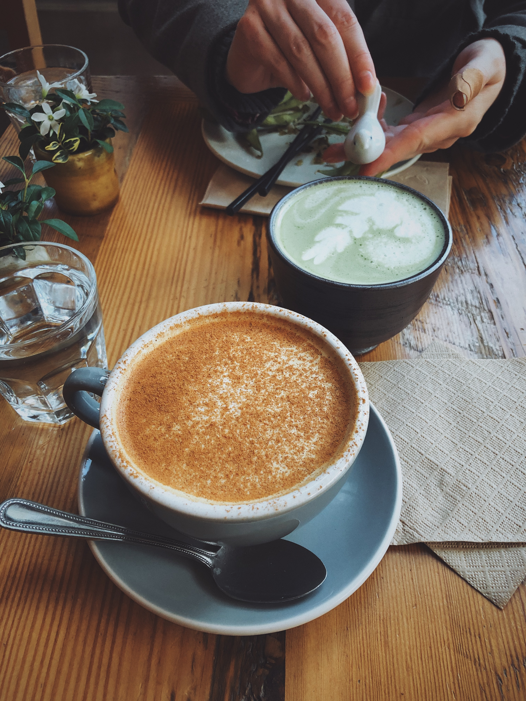
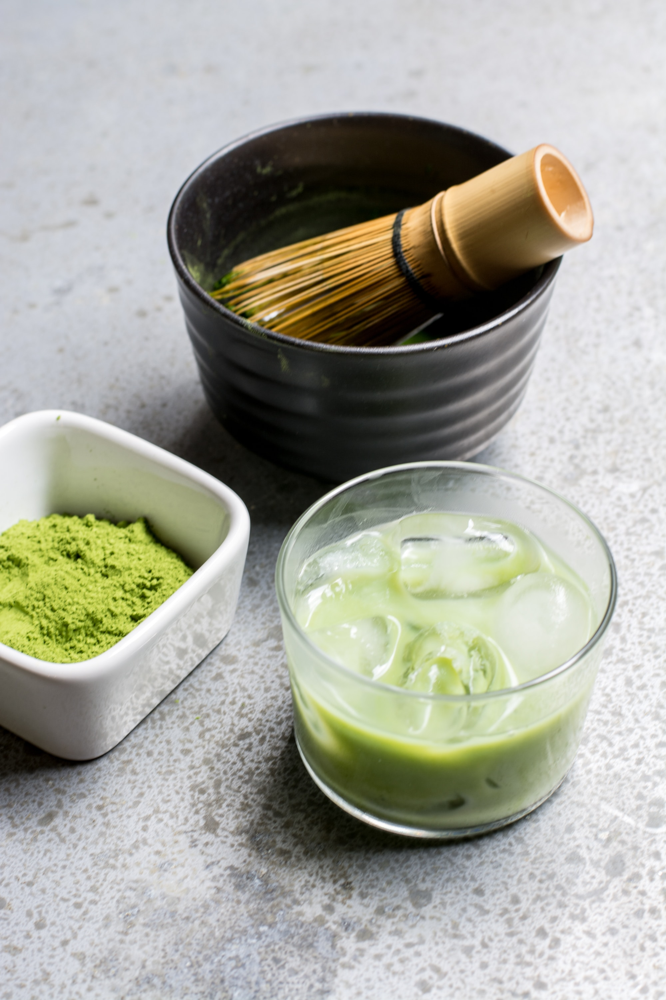
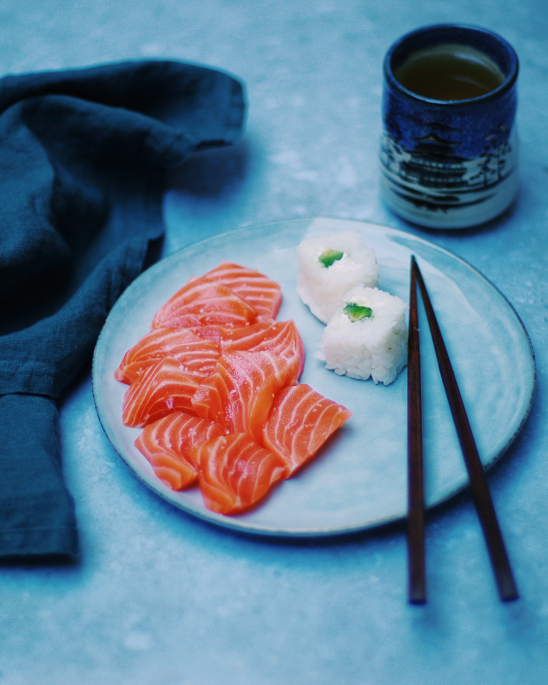

Shin's Cafe
Menu
Our menu contains dishes and refreshments that only the best of our local flavors and ingredients! Take your time as you take a look through our selection.
Coffee | 200G
An international favorite; Our coffee is brewed with love and care. Whether you fancy your coffe with cream and sugar or black, our baristas will make sure each cup is tailored to your preference.

Bubble Tea | 350G
A traditional beverage hailing from the country of Kun-Xiang. This drink consists of delicious boba pearls, boiled to perfection and sweetened with honey from Kun-Xinese Silk-hornets.
Ibara-matcha Tea | 250G
This is the staple drink of Ibarashima. The powder that is used to make this is ground from dehydrated moss that grows on the trees in the forests of Mt. Hanabira. It is then gently wisked together with boiling rosewater.

Grilled Eel | 700G
Freshly caught eel is filleted in two pieces and grilled over simmering Whispering Oak wood, giving it a smokey flavor with a hint of rosemary. Served with white rice and Unagi sauce.
Sashimi Platter | 900G
An assortment of fish from various parts of Ibarashima sliced into perfect bite sized pieces. Served with white or brown rice.

Shunomori-Style Ramen | 1200G
A popular dish in the capital city of Shunomori. Noodles made from Duros wheat are combined together with grilled shrimp, onion slivers, fish cake, and finished with tonkotsu broth. Served with your choice of drink and yaki-fu (Dried Wheat Gluten).